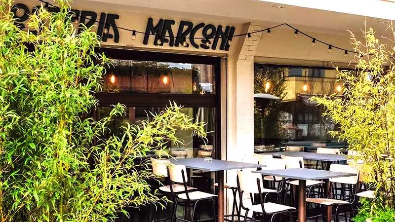
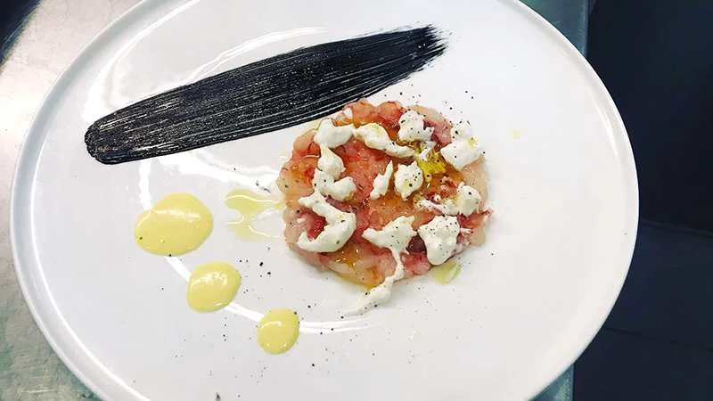
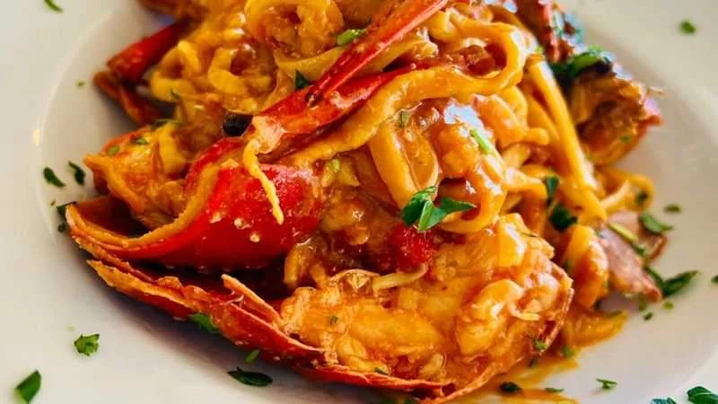
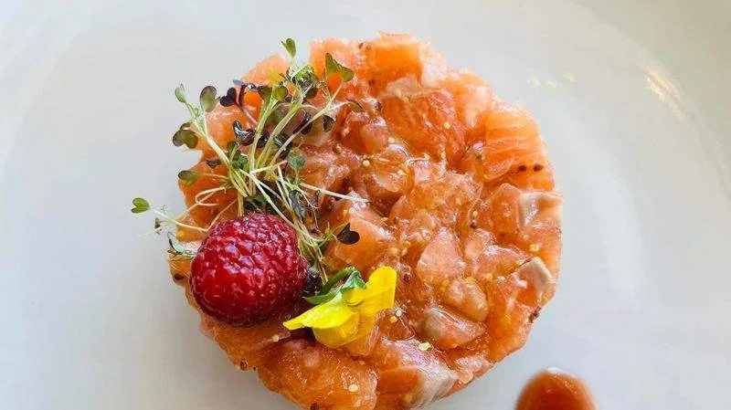
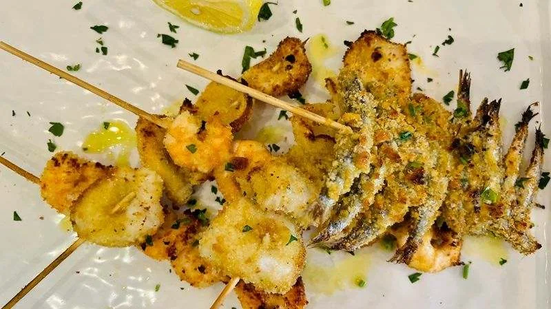
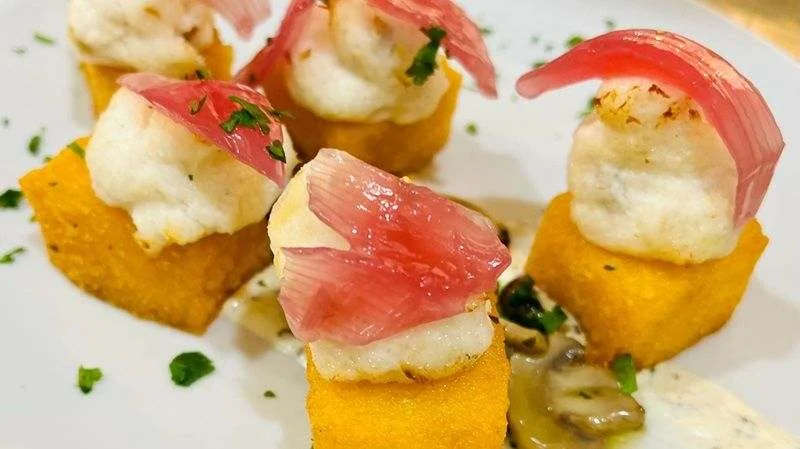

Viale Marconi 55 · Pesaro
Il mare in tavola, senza copione.
Crudi, carbonara di mare, gnocco con mazzancolle e gambero rosso, fritture di paranza. A due passi dal lungomare di Pesaro, aperti tutti i giorni. E per chi non vuole il pesce c'è l'alternativa di carne.
Aperti tutti i giorni
- Pesce dell'AdriaticoGrigliata, crudo e secondo del giorno secondo quello che offre il mercato.
- Cucina alternativaPiatti di tradizione rifatti a modo nostro: il cannolo è di baccalà, la coda di rospo è in porchetta.
- Tutti i giorniPranzo e cena, e il venerdì e il sabato si resta aperti fino all'una.
Degustazione di antipasti Il più citato
24 €Freddi e caldi, sette voci tutte lavorate a mano.
Battuto di gambero rosso con burrata e pistacchio
18 €Gambero rosso crudo, burrata e granella di pistacchio.
Tartare di salmone con avocado
16 €Fritto di gamberi e calamari con verdure
15 €Un fritto fatto a regola d'arte
, scrive manuela N. su TheFork.Cannolo di baccalà mantecato Della casa
prezzo da inserireCannolo artigianale ripieno di baccalà, granella di pistacchio, salsa di mirtilli.
Tentacoli di polpo scottato
prezzo da inserireCon panzanella, cipolla croccante e bietole.
Parmigiana di pesce
prezzo da inserireCrudo del giorno
prezzo da inserireSecondo il mercato del giorno.
Gnocco con mazzancolle e gambero rosso Firma
16 €Ragù di mazzancolle nostrane e bisque, crema di burrata, pistacchio e battuto di gambero rosso crudo.
Spaghettoni con carbonara di mare
15 €La carbonara è uno dei piatti più nominati nelle recensioni su Google.
Raviolo ripieno di sogliola
16 €Con pomodorino e sugo di sogliola.
Tagliolini all'astice
20 €Tagliolini al ragù di pesce
14 €Spaghettoni con cannelli, vongole e bottarga
prezzo da inserireCannelli sgusciati, asparagi, crema di vongole e bottarga.
Ottimi
, scrive Cesare T. su Google.Passatello «mare nostrum»
prezzo da inserireAllo scoglio.
Spiedini misti alla griglia
16 €Grigliata dell'Adriatico
secondo mercatoSecondo la disponibilità del mercato.
Branzino al forno con verdure di stagione
prezzo da inserireCoda di rospo in porchetta
prezzo da inserireCon crema di zafferano e contorno di stagione.
Tataki di tonno in crosta di pistacchio
prezzo da inserireGlassa al miele affumicato e bietole saltate.
Frittura mista con paranza
prezzo da inserireUn fritto misto buonissimo, materia prima eccellente e cottura perfetta
, Giusy S. su TheFork.
Tagliata di scottona marchigiana
prezzo da inserireAl sale grosso e rosmarino, oppure con rucola e balsamico. Circa 300 grammi.
Cotoletta di vitello alla milanese
prezzo da inserireCon l'osso, servita con patate fritte.
Maiale cotto a bassa temperatura
prezzo da inserireCon riduzione al sangiovese e patate arrosto.
Millefoglie con mousse al pistacchio
6 €Semifreddo con frutta secca pralinata
6 €Con salsa mou salata.
Panna cotta al passion fruit
6 €Biscotto digestive e cioccolato bianco al riso soffiato.
Mousse di mascarpone con Nutella
prezzo da inserireCon crumble di biscotto.
Cheesecake ai frutti di bosco
prezzo da inserire

L'osteria
Un'osteria piccola, vicino al mare.
Siamo in Viale Guglielmo Marconi 55, accanto all'Hotel Clipper, a due passi dal lungomare di Pesaro. Una sala dalle linee semplici e i tavoli fuori, tra i bambù. In cucina si parte dal pesce dell'Adriatico e lo si porta dove non te lo aspetti, senza perdere il sapore.
«Abbiamo avuto modo di parlare con lo chef: è una persona che ama il suo lavoro e che studia di continuo per migliorare sempre di più.»— Joe R., recensione su TheFork
Dalla nostra cucina
Prima si guarda, poi si assaggia.




Dicono di noi
Chi ci prova dice che torna.
- Antipasti · 110 recensioni
- Carbonara · 16
- Tagliolini · 16
- Gnocchi · 11
- Spaghetti alle vongole · 10
- Passatelli · 8
- Cannoli · 8
«Abbiamo cenato qui due volte in pochi giorni, e forse basterebbe questo a dire quanto ci sia piaciuto. Materie prime di eccellente qualità, rielaborate con originalità e sapienza, in accostamenti mai scontati ma sempre equilibrati.»
«I piatti erano deliziosi, curati nella presentazione e ricchi di sapore, dagli antipasti fino ai dolci spettacolari. […] Torneremo sicuramente, consigliatissimo!»
«Servizio veloce e cortese, ho mangiato un fritto misto buonissimo, materia prima eccellente e cottura perfetta, qualità prezzo ottima, da ritornare.»
Prenota
Il vostro tavolo vi aspetta.
Scegliete giorno, ora e quante persone siete: il messaggio parte su WhatsApp già scritto e vi rispondiamo noi. Per la sera stessa conviene chiamare.
- 393 123 1745Chiamate l'osteria
- Scriveteci su WhatsAppStesso numero, 393 123 1745
- osteriamarconipesaro@gmail.comPer gruppi e richieste
Preferite prenotare online? Siamo anche su TheFork.
Qualcuno non mangia pesce? Nessun problema.
Siamo «nonsolopesce»: in carta c'è sempre un'alternativa di carne, e i contorni sono di stagione. Così al tavolo stanno bene tutti.
- Tagliata di scottona marchigiana
- Cotoletta alla milanese
- Maiale a bassa temperatura
- Verdure al forno o gratinate
Orari e dove
Ci trovate in Viale Marconi.
- Lunedì19:30–23:30
- Martedì12:30–15:30 · 19:30–24:00
- Mercoledì12:30–15:00 · 19:00–24:00
- Giovedì12:30–15:30 · 19:00–24:00
- Venerdì12:30–15:30 · 19:00–01:00
- Sabato12:30–15:30 · 19:00–01:00
- Domenica12:30–23:30
Il lunedì siamo aperti solo a cena.
- Dal mare: siamo a due passi dal lungomare, accanto all'Hotel Clipper.
- Parcheggio: fuori stagione si trova facilmente in zona, racconta un cliente. D'estate conviene prenotare e arrivare con calma.
- Accessibile: ingresso, tavoli e bagno accessibili in sedia a rotelle.
- Con il cane? Telefonateci prima e ci organizziamo.
61121 Pesaro (PU)
A due passi dal lungomare, accanto all'Hotel Clipper.